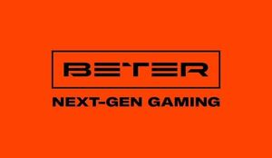

Trade Mark Journal No.2025/028 11 July 2025
WO0000001860615 (9,35,41,42)
Office of origin: European Union Intellectual Property Office (EUIPO)
Date of International Registration:11 October 2024
Date of designation in the UK:
11 October 2024

The mark contains the colours orange and black.
- Class 9
- Apparatus and instruments for recording, transmission, reproduction or processing of sound, images or data; recorded and downloadable media files, computer software, clean digital or similar media for recording and storing data; 3D glasses; audiovisual works recorded or downloadable; audio and video products recorded or downloaded; audio interfaces; audiobooks; audio and video recordings of sports tournaments, competitions, championships on magnetic and optical media; video tapes; video content recorded or downloadable; video reviews, recorded or downloadable videos; videos downloadable or recorded; downloadable video files; video projectors; virtual reality headsets; headsets for phones; holograms; downloadable graphic images for mobile phones; magnetic and optical discs recorded; DVDs and other digital recorded media; slides [photography]; screen savers (screensavers for computers recorded or downloaded); downloadable electronic publications; electronic displays for displaying data in the form of numbers; electronic interactive whiteboards; electronic warning boards; electronic labels for goods; downloadable emoticons for mobile phones; downloadable software applications for mobile phones, smartphones, portable devices; downloadable files with content for viewing on tv or portable devices; sound recording discs; sound recording media; game software for use with game consoles; game programs downloadable or recorded for electronic devices; downloadable online publications; interfaces for computers; memory cards for video slot machines; integrated circuit cards [smart cards]; video game tapes; electronic downloadable books; CDs [audio discs, video discs]; CDs [readable memory]; computer software recorded; computer game boot software; computer game software recorded; downloadable computer programs; computer programs recorded; downloadable computer software applications; computer software platforms recorded or downloadable; decorative magnets; magnetic data carriers; animated cartoons; optical media; switchboards; exposed films; downloadable ringtones for mobile phones; downloadable image files; downloadable music files; usb flash drives; downloadable photos; downloadable photos and videos of sports tournaments, competitions, championships.
- Class 35
- Advertising; business management; business administration; office work; administrative assistance in requests for submission of commercial proposals; administrative assistance in responding to calls for tenders; administrative processing of purchase orders; administration of customer loyalty programs; cost analysis; analytical information services for commercial or advertising purposes; production of sound, video and photo recordings for advertising purposes; banner advertising on the Internet; negotiation of business contracts for others; market research; public opinion polling; billing; arranging subscription to telecommunication services for others; demonstration of goods; provision of information in the field of entrepreneurial activity; providing feedback from users on commercial or advertising needs; providing information in the area of business through websites; providing information in the area of entrepreneurial activity; providing information on commercial and business contacts; providing commercial information and advice to consumers in choosing goods and services; providing ratings from users for commercial or advertising needs; production of videos for commercial or advertising purposes; web indexing for commercial or advertising purposes; business management for freelance service providers; management of professional athletes; commercial information and advice for fans [fan support centers]; commercial management of licensing goods and services of others; computerized file management; consultancy regarding advertising communication strategies; consultancy regarding public relations communication strategies; marketing; marketing in the framework of software publishing; target marketing; marketing research; writing of curriculum vitae for others; writing of publicity texts; writing scripts for advertising needs; word processing; updating of advertising materials; maintenance of on-line databases being updating and maintenance of information in registries; organization of exhibitions for commercial or advertising purposes; organizing and conducting various events, promotions, campaigns, PR campaigns, promotions, media promotions, surveys, contests, shows and presentations for commercial or advertising purposes; promotional sponsorship of sports tournaments, championships, meetings, matches, competitions for commercial or advertising purposes; organizing and conducting PR events, including press tours and press conferences; organization of fairs; rental of advertising space; recruitment; business intermediary services relating to the matching of potential private investors with entrepreneurs needing funding; services of commercial information agencies; outsourcing services [business assistance]; import-export agency services connected with audio and video products, computer programs relating to sports tournaments, competitions, championships, matches, meetings; corporate communications services; layout services for advertising purposes; press review services; website traffic optimization services; price comparison services; advertising relating to various sports tournaments, competitions, championships; market intelligence services; photocopying services; purchasing services for others [purchase of goods and services for other enterprises]; media relations services; gift registry services; services of import-export agencies; advertising agency services; public relations services; commercial lobbying services; commercial mediation services; retail services for downloadable audiovisual works in digital format online; retail services for downloadable ringtones online; online retail services for downloadable and pre-recorded video and photo recordings of sports tournaments, competitions, championships, matches, meetings; data search in computer files for others; sponsorship search; search engine optimization for sales promotion; presentation of goods on the media for retail purposes; rental of billboards; rental of advertising materials; rental of advertising time on the communication media; rental of sales stands; direct mail advertising; publication of advertising matter for advertising and commercial purposes; publication of advertising texts; radio advertising; outdoor advertising; mail advertising; online advertising via a computer network; the bringing together for the benefit of others (except of transportation) of audio and video products, computer programs relating to sports tournaments, competitions, championships, matches, meetings, enabling consumers to conveniently compare and purchase those goods in specialized outlets, online stores or by electronic means; placing advertisements for others on websites, in particular advertising information on various goods and the list of provided services, which allows buyers to conveniently browse, order and buy these goods and order services from web pages and websites on the internet, as well as receive the necessary information about these goods or services; distribution of samples; distribution of advertising materials; development of advertising concepts; systematization of information into computer databases; compilation of indexes of information for commercial or advertising purposes; sales promotion for others; promoting the sale of goods and services through sponsorship of sporting events; promotion of ticket sales for sports tournaments, matches, championships, competitions, meetings, matches, including online; creation of advertising films, videos, presentations; creation of video content, video reviews, videos and programs for commercial or advertising purposes; television advertising; telemarketing services; negotiating and concluding commercial transactions for others.
- Class 41
- Education; providing training; entertainment services; arranging sports and cultural events; production of video recordings; production of video recordings and photography of various sports events, including: tournaments, matches, championships, competitions, meetings, fights; preparation of publications with the help of electronic desktop publishing tools; providing user ratings for entertainment purposes entertainment or cultural needs; providing information in the area of sports; providing information on recreation and entertainment; providing information on holding sports championships, competitions, meetings, matches, tournaments; providing not downloadable videos online; providing not downloadable electronic publications online; providing not downloadable television programs with the help of video services on request; providing not downloadable movies with the help of video services on request; providing ratings from users for entertainment or cultural needs; provision of sports equipment; provision of equipment for recreation; ordering tickets for performances, sporting events, competitions, matches, tournaments, championships, meetings; sound directing services for events; gaming services provided online via a computer network; film screenings; movie rental; microfilming; editing of videotapes; writing scripts, other than those intended for advertising purposes; writing texts; organization of performances [impresario services]; organizing exhibitions for cultural or educational needs; organization of competitions [sports, games or entertainment]; organizing lotteries; organization of entertaining costumed events; organizing, conducting and video recording of sports championships, competitions, matches, meetings, tournaments; organizing and holding press briefings, round tables, press conferences, interviews, meetings with athletes and coaches; party planning [entertainment]; entertainment artists' services; journalist services, including writing text reviews, interviews and descriptions of events; video editing services for events; layout services, other than for advertising purposes; services for assessing the level of physical fitness for training needs; telecommenting, radio commenting and commenting services on the internet on various sporting events; interpretation services; internet information portal services for games, sports and entertainment; translation services; reporter services; lighting services for events; sports camp services; recording studio services; photojournalist services; gambling services; practical training [demonstration]; rental of audio equipment; rental of scenery for shows; video camera rental; video rental; rental of sound recorders; rental of game equipment; movie equipment rental; rental of training simulators; rental of sports grounds; rental of sports equipment, except vehicles; tennis court rental; rental of equipment for stadiums; professional retraining; career guidance [advice on education or training]; publishing e-books and magazines online; publishing books; publication of texts, except advertising; entertainment and sports radio programs; editorial and publishing services; film directing, except advertising films; creating performances; creation of video content, video reviews, videos and programs, except of advertising; creation of radio and television programs; creation of films, except advertising; subtitling; entertainment and sports television programs; physical education; photography; photo reports and photo reporter services; timing of sporting events.
- Class 42
- Scientific and technological services and research and design relating thereto; industrial analysis, industrial research and industrial design services; quality control and authentication services; design and development of computer hardware and software; computer system analysis; recovery of computer data; graphic arts design; graphic design of promotional materials; design of show scenery; computer graphic design for video projection mapping; off-site data backup; research and development of new products for others; duplication of computer programs; electronic data storage; providing virtual computer systems through cloud computing; providing information relating to computer technology and programming via a website; providing search engines for the internet; installation of computer software; computer programming; conversion of data or documents from physical to electronic media; conversion of computer programs and data, other than physical conversion; computer technology consultancy; telecommunication network security consultancy; telecommunications technology consultancy; data security consultancy; computer software consultancy; computer security consultancy; website design consultancy; quality control; monitoring of computer systems for detecting unauthorized access or data breach; monitoring of computer system operation by remote access; writing of computer code; maintenance of computer software; updating of computer software; digitization of documents [scanning]; platform as a service [PaaS]; user authentication services using single sign-on technology for online software applications; computer programming services for data processing; software engineering services for data processing; technological consultancy services for digital transformation; hosting computer websites; data encryption services; software as a service [SaaS]; computer software design; rental of web servers; rental of computer software; development of video and computer games; development of computer platforms; software development in the framework of software publishing; creating and maintaining websites for others; creating and designing website-based indexes of information for others [information technology services]; server hosting; styling [industrial design]; user authentication services using blockchain technology; rental of data centre facilities; providing online trading platforms for buyers and sellers of goods and services.
EKALIA LTD
Representative: Stanislava Teleišienė nn, Taikos g. 235-17, LT-05213 Vilnius, LITHUANIA